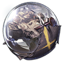

추천 광추
인법첩•요란 파마
격파 특수효과·첫 에너지·강화 일반 공격 후 가속
효과 자세히
격파 특수효과 +60%, 시작 에너지 +30pt. 필살기 후 일반 공격 2회 → 자신의 행동 50% 당김.
조화가 침묵한 후
격파 특수효과와 필살기 후 속도
효과 자세히
격파 특수효과가 56% 증가. 필살기 발동 후 속도가 16% 증가, 지속 2턴
멈추지 않는 연산
공격력 및 다수 대상을 칠 때 속도
효과 자세히
공격력 +12%. 명중한 적 1기당 공격력 +8%(최대 5스택). 3기 이상 명중 → 속도 +16%(1턴).
세상을 진정시키지 마
첫 에너지 수급으로 결인 진입 보조
효과 자세히
전투 진입 시 에너지가 즉시 32pt 회복하고, 대상의 필살기가 가하는 피해가 64% 증가
추천 유물
곤충 재앙을 잠재우는 철기군 4 · 도적국 탈리아 2
- 머리
 주옵션HP부옵션속도 · 격파 특수효과 · 공격력%
주옵션HP부옵션속도 · 격파 특수효과 · 공격력% - 손
 주옵션공격력부옵션속도 · 격파 특수효과 · 공격력%
주옵션공격력부옵션속도 · 격파 특수효과 · 공격력% - 몸통
 주옵션공격력%부옵션속도 · 격파 특수효과
주옵션공격력%부옵션속도 · 격파 특수효과 - 다리
 주옵션속도부옵션격파 특수효과 · 공격력%
주옵션속도부옵션격파 특수효과 · 공격력% - 구체

주옵션공격력%부옵션속도 · 격파 특수효과 - 매듭
 주옵션격파 특수효과부옵션속도 · 공격력%
주옵션격파 특수효과부옵션속도 · 공격력%
이 조합을 추천하는 이유
철기군으로 격파 방어력을 무시하고, 탈리아의 속도 145 조건을 맞춰 격파 특수효과를 추가로 확보합니다.
유성을 쫓는 괴도 4 · 겁화 연등의 연마궁 2
- 머리
 주옵션HP부옵션속도 · 격파 특수효과 · 공격력%
주옵션HP부옵션속도 · 격파 특수효과 · 공격력% - 손
 주옵션공격력부옵션속도 · 격파 특수효과 · 공격력%
주옵션공격력부옵션속도 · 격파 특수효과 · 공격력% - 몸통
 주옵션공격력%부옵션속도 · 격파 특수효과
주옵션공격력%부옵션속도 · 격파 특수효과 - 다리
 주옵션속도부옵션격파 특수효과 · 공격력%
주옵션속도부옵션격파 특수효과 · 공격력% - 구체
 주옵션공격력%부옵션속도 · 격파 특수효과
주옵션공격력%부옵션속도 · 격파 특수효과 - 매듭
 주옵션에너지 회복효율 / 격파 특수효과부옵션속도 · 격파 특수효과 (주옵션 제외) · 공격력%
주옵션에너지 회복효율 / 격파 특수효과부옵션속도 · 격파 특수효과 (주옵션 제외) · 공격력%
이 조합을 추천하는 이유
괴도 4세트 → 직접 격파 시 에너지 +3pt. 반디·달리아 조합이나 화염 약점 적이 있으면 연마궁 격파 특수효과 +40%.
이 정도면 잘 키웠다
동일 파티·광추 기준 · 조건 [*]
| 스탯 | 추천 스탯 | 준종결 | 종결 |
|---|---|---|---|
| 격파 특수효과 [*] 회복효율 매듭을 쓸 때 낮아질 수 있습니다. 철기군은 전투 250%에서 슈퍼 격파 효과까지 발동. | 마을 160% | 마을 200% | 마을 240%+ |
| 속도 [*] 탈리아는 전투 145 이상을 확인하세요. | 145 | 150 | 턴 횟수 최적화 |
| 공격력 [*] 공격력 행적 보너스 상한. 격파 특수효과·필요 속도 이후 조정. | 전투 3,200 목표 | 전투 3,200 | 전투 3,200 유지 |
육성 단계의 기준
Lv.80 · 5성 유물 +15. Prydwen 참고 범위와 발동 조건을 바탕으로 나눈 편집 목표입니다.
성혼과 추천 돌파
성혼 1은 결인 피해와 다음 필살기 회전을 모두 보강합니다.
1결인 중 방어력 15% 무시·종료 후 에너지 +20pt추천
필살기를 발동하여 결인 상태에 진입하는 동안 라파가 가하는 피해가 목표의 방어력을 15% 무시하고, 결인 상태 해제 후 에너지를 20pt 회복
2강화 일반 공격 첫 2타 주 대상 강인성 감소 +50%
강화된 일반 공격의 처음 2단 공격이 지정된 단일 적에게 가하는 강인성 감소 수치가 50% 증가
3전투 스킬 +2 · 특성 +2
전투 스킬 +2 · 특성 +2
4결인 중 아군 속도 +12%
결인 상태 동안 모든 아군의 속도가 12% 증가
5필살기 +2 · 일반 공격 +1
필살기 +2 · 일반 공격 +1
6충전 시작·상한 +5pt, 강화 일반 공격 마지막 타 이후 +5pt
전투 시작 시 라파가 특성 효과의 충전을 5pt 획득하고, 충전 상한이 5pt 증가. 인구•항마의 꽃잎의 3번째 공격 발동 후 충전을 5pt 획득
추천 파티


기본 운영과 행적
기본 운영
적 격파로 충전을 모은 뒤 필살기로 결인에 진입하세요. 강화 일반 공격의 주 대상을 정예에게 맞추고, 다수 적의 약점 격파로 다음 강화 공격을 준비합니다.
행적 우선순위
특성 > 필살기 > 일반 공격 > 전투 스킬. 적 격파와 충전 관련 주요 행적을 해금하세요.
아하 속도 계산기 →기준과 출처 · 2026-11-25
4.7 · 한국어 게임 데이터 및 Prydwen 육성 분석